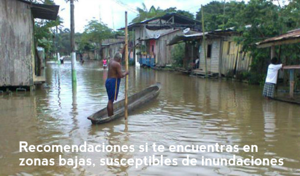

Arregla y limpia los techos de tu vivienda.
Arregla y limpia los techos de tu vivienda.|  |
Recomendaciones si te encuentras en zonas bajas, susceptibles a inundaciones
Arregla y limpia los techos de tu vivienda.
Ubica sacos de arena en el ingreso de tu vivienda.
Elabora un plan de emergencia familiar.
Prepara la mochila de emergencia.
Identifica las zonas seguras y rutas de evacuación.
Mantente informado sobre la predicción meteorológica de lluvias en tu sector.